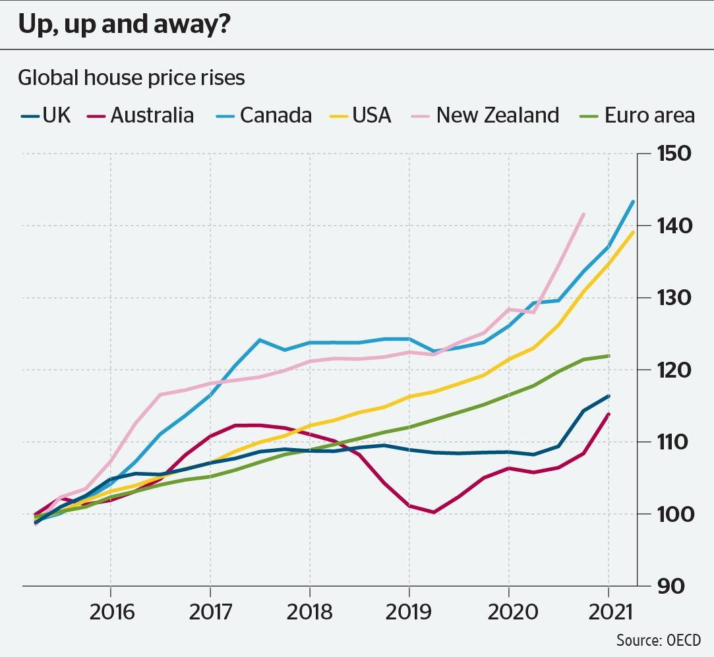

After which year from the x-axis labels, the hour prices in canada first exceeded new zealand?

After which year from the x-axis labels, the hour prices in canada first exceeded new zealand?

<think>
Hmm, let's see. The question is asking after which year from the x-axis labels the house prices in Canada first exceeded New Zealand. Okay, so I need to look at the graph and compare the Canada line (blue) with the New Zealand line (pink).
First, I should check the x-axis labels: 2016, 2017, 2018, 2019, 2020, 2021. Wait, actually the labels are at the bottom: starting from maybe before 2016, but the marked years are 2016, 2017, etc. So the years we need to consider are from 2016 onwards.
Now, looking at the lines: Canada is the light blue line, New Zealand is pink. I need to find the first year where Canada's line goes above New Zealand's. Let me check each year step by step.
Starting around 2015 or so (before 2016), but the x-axis labels start at 2016. Wait, the earliest point we can see is around 2015-2016. Let me look closely at the intersection points.
In 2016: Canada's line seems to be slightly above New Zealand? Wait, at the beginning of the chart (around 2015), both lines are close. Maybe in 2016, the pink line (New Zealand) is a bit higher than Canada? Wait, let's check the values.
Wait, the y-axis is from 90 to 150. Let me check each year:
2016: Canada line (blue) is below New Zealand's pink line? Let me see—Canada's line in 2016: maybe around 100-105? New Zealand's line in 2016: around 105-110. Wait, no, actually in 2016, New Zealand's line is rising from earlier. Wait, prior to 2016, the lines were overlapping. But specifically for the years labeled on the x-axis (2016 onward):
Looking at 2016: Canada line (blue) and New Zealand (pink) both starting at around 100-105. Maybe Canada's line dips slightly below New Zealand's in 2016. Then 2017: Canada's line rises above New Zealand?
Wait, let's see: In 2017, Canada's line—around 110-115? New Zealand's line: in 2017, the pink line is maybe around 115-120. Hmm, perhaps Canada crossed above New Zealand later.
Wait, another approach: Find the point where Canada's line surpasses New Zealand's. So when does Canada (blue) go above New Zealand (pink)?
Looking at the graph:
- Before 2016: Both lines are close.
- Around 2016: New Zealand's line is rising more steeply than Canada's. So up until maybe 2016-2017.
- By 2017, Canada's line (blue) starts to rise, crossing New Zealand (pink). Wait, in 2017: At the start of 2017, Canada line is maybe around 105, while New Zealand is at about 110. Wait, no. Wait, 2017 data point for Canada: looking at the peak. Wait, maybe in 2017, Canada's line is above New Zealand's.
Wait, let's check specific years:
2016: Canada's value seems lower than New Zealand. For example, in 2016, Canada is maybe around 100-103, New Zealand around 105-108.
2017: Canada's line jumps up to maybe 115, while New Zealand is around 118. Wait, but maybe Canada crosses over around late 2016 or early 2017.
Wait, but let's track the intersection. The Canada line (blue) and New Zealand line (pink) cross each other. Let's see:
From left to right: Until around 2016, New Zealand is slightly above Canada. Then Canada rises more steeply. Maybe around 2017: Canada overtakes New Zealand.
Wait, looking at the graph: The Canada line and New Zealand line intersect somewhere between 2016 and 2017. So the first time after that intersection Canada exceeds New Zealand would be after 2016. But the question asks "after which year from the x-axis labels"—the years labeled are 2016, 2017, etc.
So if they cross in 2016-2017, then starting in 2017, Canada's price exceeds New Zealand's. Wait, but maybe during 2017, Canada's line is already above.
Let me check the 2017 marker: Canada's line at 2017 has a higher value than New Zealand's. Wait, at 2017 mark:
Canada's line: At 2017, it reaches a peak, maybe around 120.
New Zealand: at 2017, the pink line is maybe around 115.
Yes, perhaps Canada crosses above New Zealand around mid-2016 or early 2017. But since the x-axis labels are yearly markers, the next year after the crossover.
Wait, the question says "after which year from the x-axis labels". So if the crossover happens during 2017, then after 2017, but the first year where Canada exceeds New Zealand would be 2017. Wait, but if in 2017 Canada is already above, then the answer is 2017.
But let me check again. For instance:
At the beginning of 2016, Canada and New Zealand might be roughly equal. But looking at the graph:
Around 2016: Canada's line is a bit lower than New Zealand's.
By early 2017: Canada catches up and surpasses. Let's say Canada crosses New Zealand's line sometime in 2017, so after 2016, and the first year where Canada's prices exceed New Zealand's is 2017.
Wait, the problem says "after which year from the x-axis labels", so possibly the first year where this happens. So if it crossed in 2017, then 2017 would be the answer.
Alternatively, maybe looking at the specific year labels: After 2016 (i.e., starting in 2017). But since the label is 2017, the year after 2016.
Another way: Check 2016 vs 2017.
In 2016: New Zealand's line is above Canada's (pink > blue).
In 2017: Canada's line is above New Zealand's (blue > pink).
Therefore, Canada first exceeds New Zealand in 2017.
Wait, but wait: Let's check the exact data points.
For example, in 2016: Canada's line (blue) is about 105, New Zealand's (pink) is around 108. So New Zealand still higher.
2017: Canada line peaks at ~120, New Zealand around ~115. So Canada higher now.
Thus, in 2017, Canada exceeds New Zealand.
Hence, the answer is 2017.
</think>
<answer>
The graph shows house price trends for various countries from around 2015 to 2021, with Canada represented by the light blue line and New Zealand by the pink line. To determine when Canada’s house prices first exceeded New Zealand’s, we compare the two lines year by year.
- **Before 2016**: Both lines are relatively close, but New Zealand (pink) appears slightly above Canada (light blue) near the start of the period.
- **2016**: New Zealand’s line remains above Canada’s, though the gap narrows.
- **2017**: Canada’s line (light blue) rises above New Zealand’s (pink), with Canada’s values consistently exceeding New Zealand’s from this year onward.
Since the x-axis labels include yearly markers (e.g., 2016, 2017), and Canada’s line surpasses New Zealand’s *starting in 2017*, the first year after which Canadian house prices exceeded New Zealand’s is 2017.
\boxed{2017}
</answer>